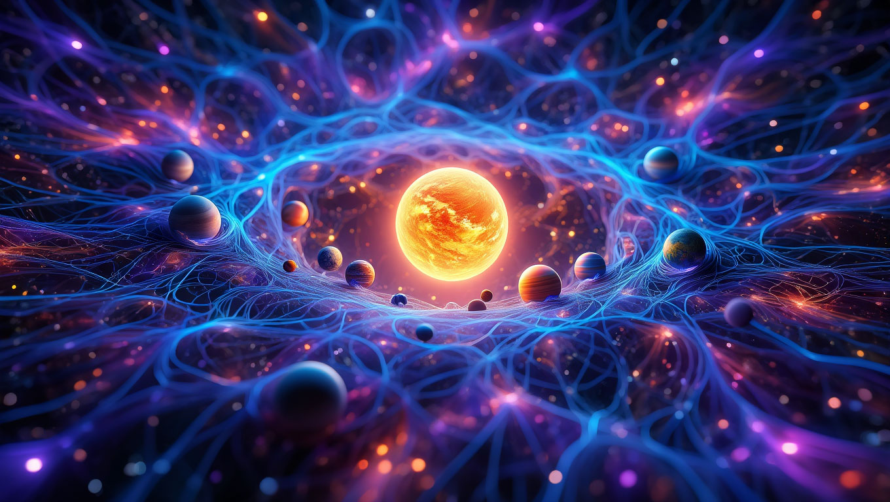

Si alguna vez tuviste en la mano un copo de nieve, habrás notado su geometría impecable: hexágonos diminutos, como diseñados por un arquitecto invisible. O quizá hayas visto una flor cuyos pétalos parecen distribuidos con exactitud matemática. Esa regularidad —que nos resulta bella y reconfortante— no es casual. Es una pista, una clave: la simetría es uno de los idiomas secretos que habla el universo.
La ciencia define simetría como aquello que permanece inalterado a pesar de los cambios. Una esfera, por ejemplo, seguirá viéndose igual aunque la giremos en cualquier dirección: redonda, completa, sin preferencia por un lado u otro. Esta idea sencilla, casi infantil, sostiene algunos de los descubrimientos más profundos de la física moderna.
La naturaleza utiliza dos grandes formas de simetría. Por un lado está la dinámica , la que surge del movimiento: planetas girando alrededor de estrellas, electrones danzando en torno a núcleos atómicos, galaxias en espiral. Todo ello son coreografías cósmicas que mantienen un equilibrio gracias a la repetición y la proporción.
Por otro lado está la estática , más visible en los seres vivos. Nuestro cuerpo, con su eje de izquierda y derecha, es un ejemplo perfecto: un equilibrio que no solo es bello, sino útil, porque favorece la adaptación y la supervivencia. Lo mismo ocurre en los animales, en las hojas, en la disposición de los pétalos. La vida, como el arte, parece preferir lo simétrico.
Claro que la asimetría también existe. La vemos en los asteroides irregulares, en las nubes de polvo interestelar, en las pequeñas imperfecciones de una hoja. Sin embargo, lo llamativo es que lo asimétrico casi siempre tiende a reorganizarse, a integrarse en sistemas más ordenados: de la nube cósmica caótica puede nacer una estrella; del cúmulo de rocas dispersas, un planeta. Es como si el universo tuviera una inclinación natural hacia el equilibrio, como si quisiera siempre recomponer su propio rostro.
En 1915, la matemática Emmy Noether formuló una idea tan poderosa como poética: toda simetría engendra una ley de conservación . Dicho mas simple: si el universo respeta cierta simetría, entonces hay algo que nunca se pierde. Gracias a esta conexión sabemos, por ejemplo, que la simetría del tiempo está vinculada a la conservación de la energía. O que la simetría del espacio asegura la conservación del movimiento. La armonía no es solo estética: es la columna vertebral de la física.
Pero hay misterios. Según la cosmología clásica, el universo primitivo era perfecto en su simetría. Y, sin embargo, esa perfección se quebró en un instante, permitiendo la aparición de la materia, de las estrellas, de nosotros. ¿Cómo puede algo absolutamente simétrico romperse a sí mismo? La paradoja es desconcertante. Tal vez la simetría no se rompió por sí sola, sino que fue desafiada por algo externo que desconocemos. O quizá el propio universo, en su afán de diversidad, encontró la manera de fracturar su espejo para multiplicar los reflejos.
Aquí la ciencia roza los bordes de la filosofía: ¿es la imperfección la que hace posible la existencia? ¿Acaso lo que llamamos “mundo” es fruto de una grieta en la perfección original? Esto puede ser que choque con la intuición cotidiana, porque tenemos la tendencia a extrapolar cosas que no captamos del todo hacia algo mas común y visual, en genera, podríamos pensar en este concepto de la asimetría y la simetría en lo que vemos como sociedad. Quizás se pueda comparar, veamos donde esta este concepto en lo cotidiano.
Cada vez que vemos repetirse un patrón —en un panal de abejas, en una galaxia espiral, en una ecuación física— estamos presenciando un eco de esa búsqueda de estabilidad. La simetría es, en cierto modo, la forma que el universo eligió para recordarse a sí mismo.
Y, al mismo tiempo, es un recordatorio para nosotros. Porque también en la vida buscamos balance: entre trabajo y descanso, entre razón y emoción, entre rutina y aventura. No somos tan distintos de las estrellas o de los átomos: sin equilibrio, nos deshacemos. En general las simetrías son una lección de belleza universal
La simetría no es solo una propiedad de la materia: es un puente entre la ciencia y la estética, entre la ley física y la experiencia humana. Tal vez por eso nos conmueve tanto un rostro armónico, un acorde musical equilibrado o una figura geométrica perfecta: porque en ellos reconocemos la huella más íntima del cosmos. Los profesionales de la arquitectura por ejemplo conocen muy bien estos conceptos sobre simetría, miren el urbanismo en Argentina, siempre manzanas simetrías o geométricamente iguales.
El universo, al hablarnos en el idioma de la simetría, nos está susurrando que todo —desde lo más diminuto hasta lo más inmenso— está tejido por un mismo pulso secreto: la necesidad de equilibrio.
El calor siempre nos acompaña. Lo sentimos en la taza de café recién servido, en la tibieza de la piel al sol o en la hoguera que reúne a un grupo de personas en la noche. Es tan cotidiano que solemos confundirlo con la temperatura, pero en realidad no son lo mismo. La temperatura es la medida, el número que marca un termómetro. El calor, en cambio, es movimiento: es la energía que fluye de un cuerpo a otro, la danza invisible de millones de partículas en agitación.
En el universo, el calor ha sido protagonista desde el comienzo. El Big Bang no fue solo una expansión: fue también un estallido térmico. Durante los primeros segundos, el cosmos era un océano incandescente donde la materia y la radiación eran inseparables. La expansión trajo consigo el enfriamiento, y gracias a ese descenso de temperatura se formaron los primeros átomos. Si el universo hubiese permanecido demasiado caliente, la materia jamás se habría organizado en estrellas ni planetas; y si se hubiese enfriado demasiado rápido, todo se habría congelado en una quietud estéril. El calor, entonces, fue el mediador que permitió que el caos inicial se transformara en cosmos.
En la Tierra, la historia no es distinta. El calor del Sol alimenta la vida, impulsa los vientos y las corrientes marinas, y sostiene el delicado equilibrio que hace habitable a nuestro planeta. Bajo nuestros pies, el calor interno de la Tierra —remanente de su formación y de la desintegración radiactiva— mantiene en movimiento el magma, provoca terremotos y da origen a continentes y cordilleras. El calor no solo es energía: es también memoria de los procesos profundos que nos sostienen.
Y detrás de estas manifestaciones palpita una ley fundamental: la entropía . Todo sistema tiende a equilibrarse, a distribuir su calor, a perder sus diferencias de temperatura. Un té caliente olvidado en la mesa acabará tibio; una brasa encendida terminará en ceniza. El universo entero se rige por esta tendencia hacia la dispersión. La entropía es, en cierto modo, el pulso del tiempo: nos dice hacia dónde va el destino de la materia.
Pero la historia no termina ahí. El calor invisible de los átomos y las moléculas nos conecta con otro fenómeno igualmente sutil: las cargas eléctricas en movimiento. Allí donde hay agitación y desequilibrio, surgen corrientes, chispas, rayos. El calor abre la puerta a un nuevo capítulo: la electricidad, esa fuerza que primero iluminó los cielos y después nuestras ciudades.
